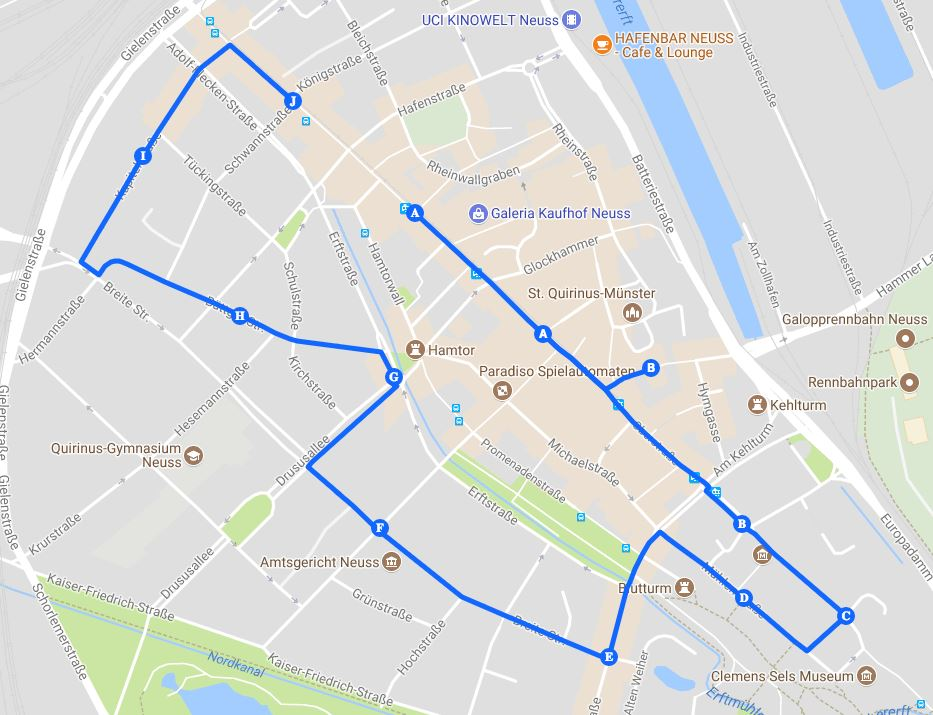
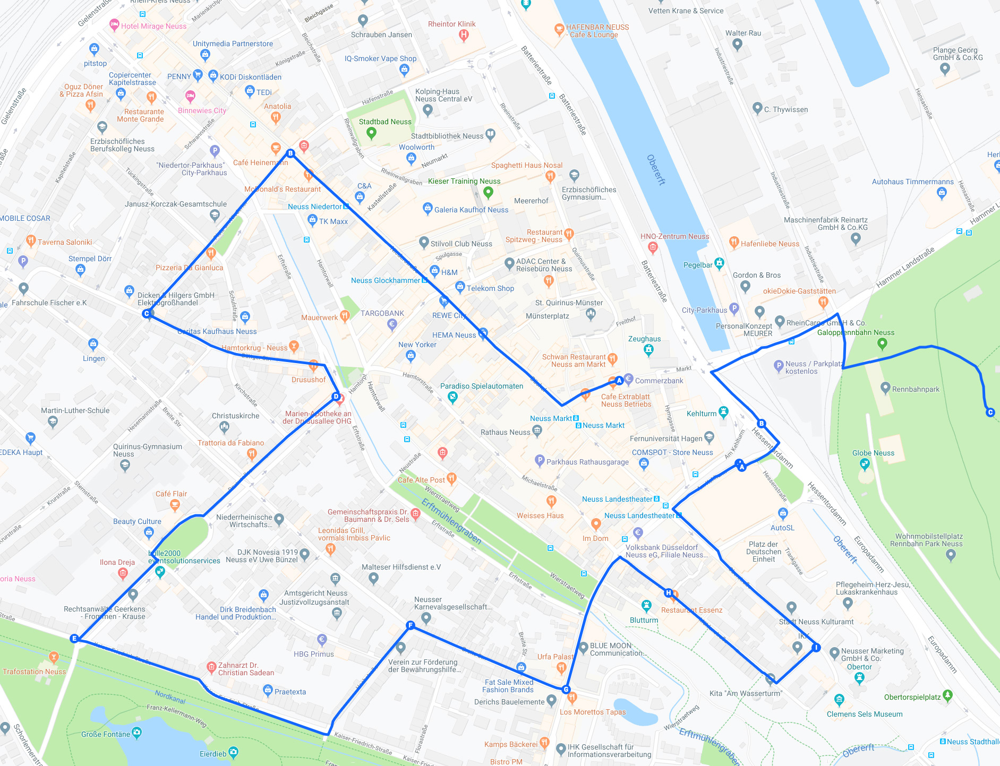
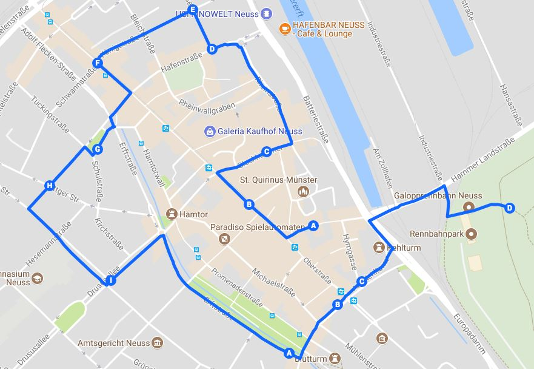
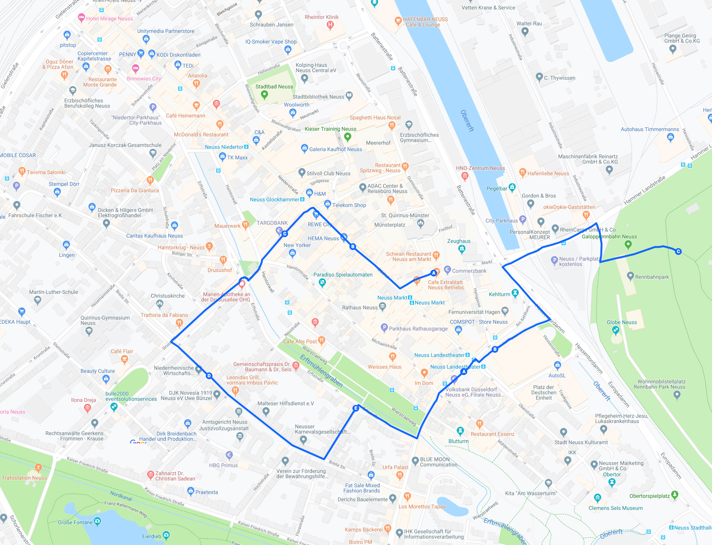
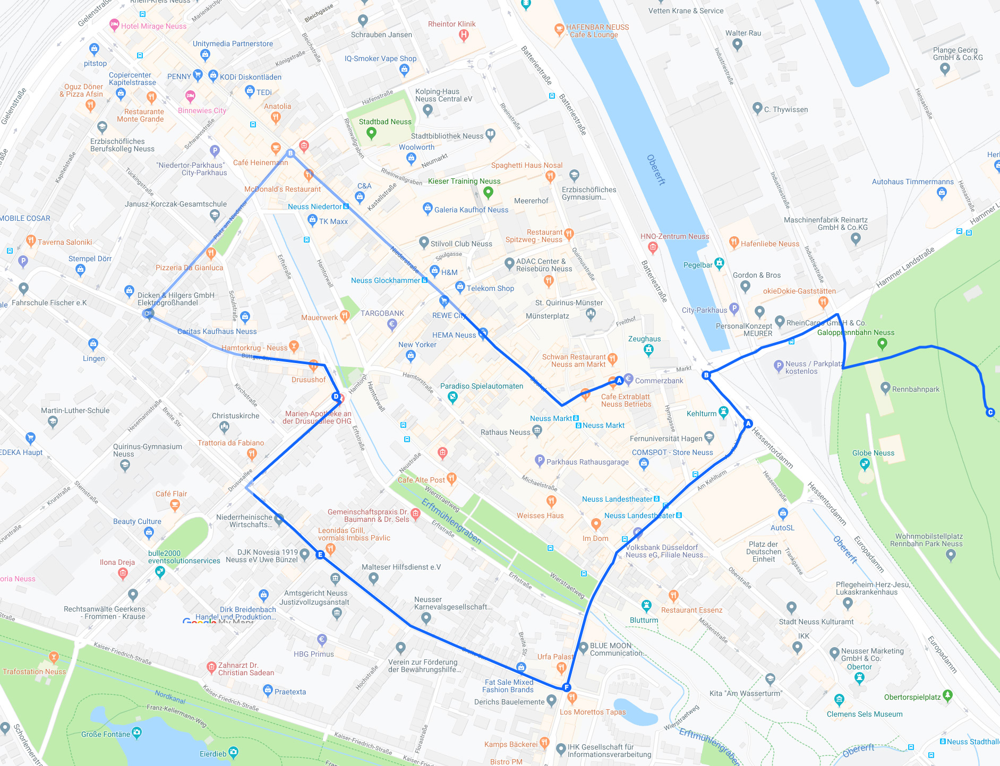
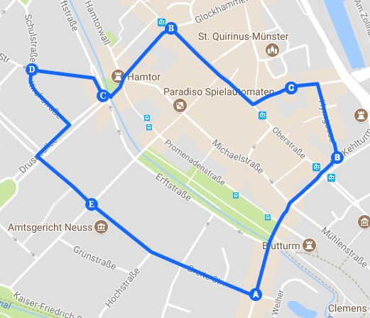

Wichtige Informationen
Korpsbefehl
Fackelausmarsch & Aufstellung
Zugwege Ehrenabende
Zugwege
Samstag 20:45 Uhr Fackelzug
Wegstrecke 3.40 km

ab Niedertor über Niederstraße, Büchel, Markt (Gegenzug), Oberstraße, Windmühlengasse, Mühlenstraße, Zollstraße, Friedrichstraße, Breite Straße, Kanalstraße, Erftstraße, Benno-Nußbaum-Platz, Büttgerstraße, Kapitelstraße, Krefelder Straße (Ende an der Einmündung Königstraße).
Sonntag 16:15 Uhr Festzug
Wegstrecke 4.00 km

ab Markt, Büchel, Niederstraße, Erftstraße, Gartenstraße, Büttger Straße, Benno- Nussbaum-Platz, Drususallee (stadtauswärts rechts), Kaiser-Friedrich-Straße, Hochstraße, Breite Straße, Friedrichstraße, Zollstraße, Mühlenstraße, Windmühlengasse, Oberstraße, Am Kehlturm (linke Fahrbahn), Hessentordamm, Hessentorbrücke, Hammer Landstraße, Schützenwiese, Festzelt.
Nach dem Festzug zum Preisvogelschießen
Beginn der Chargierten mit Zugnummer: 66
Beginn der Mannschaft mit Zugnummer: 2
Montag 15:45 Uhr Festzug
Wegstrecke 3.40 km

ab Markt über Büchel, Glockhammer, Rheinstraße, Hafenstraße, Salzstraße, Königstraße, Krefelder Straße, Erftstraße, Platz am Niedertor, Gartenstraße, Breite Straße, Drususallee (stadteinwärts links), Benno-Nussbaum-Platz, Erftstraße, Zollstraße, Am Kehlturm (linke Fahrbahn), Hessentordamm, Hessentorbrücke, Hammer Landstraße, Schützenwiese, Festzelt. Anschließend Platzkonzert, Preisvogelschießen, Preisschießen der ehemaligen Schützenkönige, Ringstechen, Tanz, Kinderbelustigungen.
Montag 19:30 Uhr Rückzug
Wegstrecke 2.30 km

ab Markt, Büchel, Sebastianusstraße, Drususallee (stadtauswärts rechts), Breite Straße, Liedmannstraße, Erftstraße, Zollstraße, Vorbeimarsch am Oberst, Am Kehlturm (linke Fahrbahn), Hessentordamm, Hessentorbrücke, Hammer Landstraße, Schützenwiese für die Korps, die nach dorthin ziehen.
Dienstag 15:15 Uhr Festzug
Wegstrecke 2.80 km

ab Markt, Büchel, Niederstraße, Erftstraße, Platz am Niedertor, Gartenstraße, Büttger Straße, Benno-Nussbaum-Platz, Drususallee (stadtauswärts rechts), Breite Straße, Friedrichstraße, Zollstraße, Am Kehlturm (linke Fahrbahn), Hessentordamm, Hessentorbrücke, Hammer Landstraße, Schützenwiese, Festzelt. Anschließend Platzkonzert, Preisvogelschießen, Ringstechen, Tanz im Festzelt, Kinderbelustigungen, Ermittlung des Reitersiegers, des Artilleriesiegers und des Edelknabenkönigs.
Dienstag 20:30 Uhr Abendumzug
Wegstrecke 2.08 km

ab Markt, dann Büchel, Sebastianusstraße, Benno-Nußbaum-Platz, Büttger Straße, Kirchstraße, Drususallee (stadtauswärts rechts), Breite Straße, Friedrichstraße, Zollstraße, Hymgasse, hier Beginn Vorbeimarsch auf dem Markt.